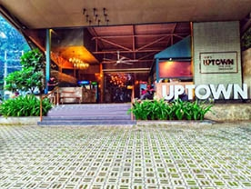
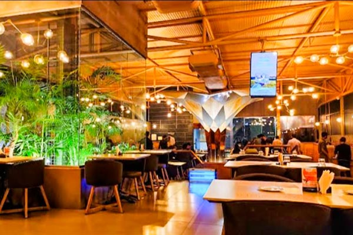
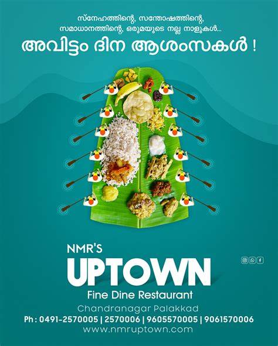

NMR UPTOWN
NMR UPTOWN Restaurant is located in Palakkad and offers an exceptional experience. The ambiance is inviting, with a pleasant atmosphere and attentive service. The food is absolutely delicious, offering a wide range of authentic Kerala dishes that are both flavorful and freshly prepared. I particularly enjoyed their traditional Kerala meals, which were served with great care and attention to detail. Overall, NMR UPTOWN provided a memorable dining experience, and I would highly recommend it to anyone visiting Palakkad looking for authentic South Indian cuisine.
Ambience

- Lighting: Whether it's soft, ambient lighting or unique fixtures, good lighting sets the mood.
- Decor: Thoughtful interior design, such as comfortable seating, interesting artwork, and cohesive themes, enhances the dining experience.
Culinary Delights
Exploring the Diverse Palette of Flavors and Textures:
- Kerala Sadya: A traditional feast served on a banana leaf, consisting of rice, sambar, avial, thoran (stir-fried vegetables), pachadi, pickle, and desserts like payasam.

- Appam with Stew: Soft and fluffy rice pancakes served with a creamy coconut milk-based stew with vegetables or meat.
- Puttu and Kadala Curry: Steamed cylinders of ground rice served with a spicy curry made with black chickpeas, coconut, and spices.
- Malabar Parotta and Chicken Curry: Layers of flaky, crispy bread served with a flavorful chicken curry.
- Meen Curry (Fish Curry): Spicy and tangy fish curry made with coconut milk and a blend of spices.
- Elaneer Payasam: A refreshing dessert made with tender coconut pieces, coconut milk, and jaggery, served chilled.
- Kozhi Varutharachathu: Spicy chicken curry cooked in roasted coconut gravy.
These dishes highlight the authentic flavors and diversity of Kerala cuisine, making Palakkad a paradise for food enthusiasts.
Shop timing: 11 AM - 10 PM. It's a must-try spot.